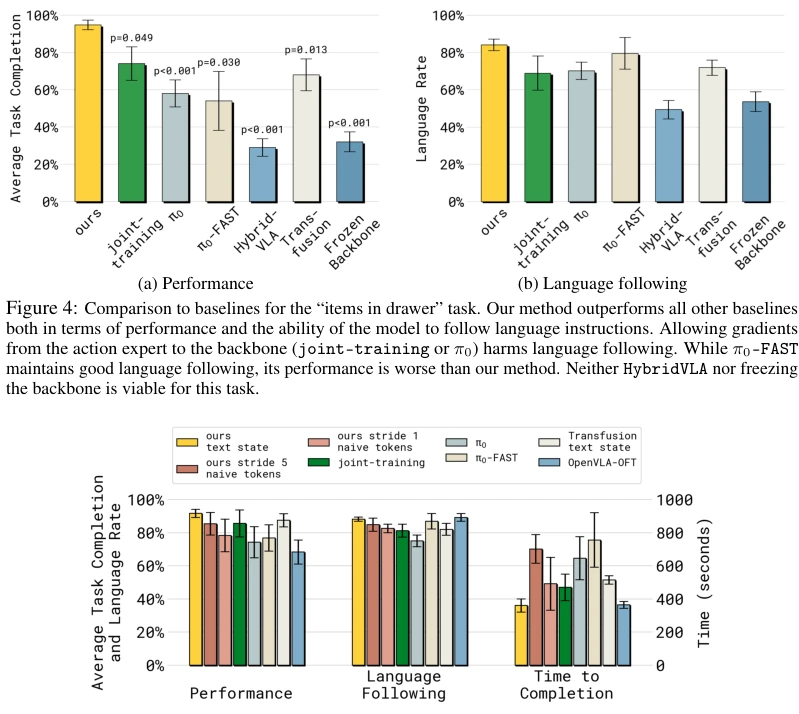
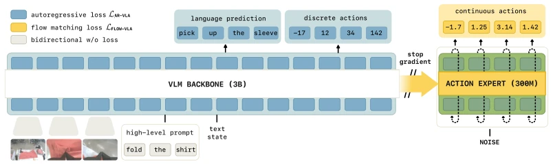
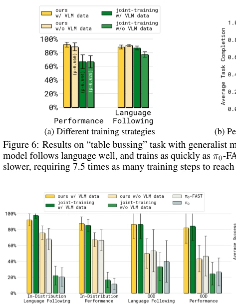
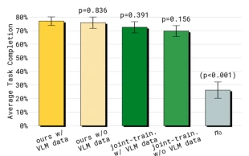
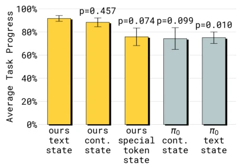

This paper performs a "knowledge isolation surgery" on VLA models. The authors found that directly adding continuous action experts like π0, while fast in inference, degrades the pre-trained VLM language understanding capabilities, causing robots to fail to understand instructions. Their strategy is to let the backbone network learn only discrete actions, the action expert learn only continuous actions, and insert gradient blocking in between. This strategy indeed accelerates training and inference while retaining language instruction following capabilities. However, do not be too optimistic; training costs still increased by 20%, and language following is not perfect, as noise in the data remains. This counts as a shot of adrenaline for the VLA architecture, but there is still a gap to "general-purpose robots", representing "pragmatic" optimization rather than disruption.
Existing VLA models face a dilemma: using discrete tokens for inference is too slow (e.g., π0-FAST [37]), while using continuous experts (e.g., π0 [7]) destroys pre-trained knowledge. Gradients from randomly initialized action experts interfere with the VLM backbone, leading to degraded language instruction following. Freezing the backbone is insufficient, because the VLM has not learned robot data, resulting in insufficient representation. OpenVLA-OFT [25] and others attempt parallel decoding, but results are poor. A method is needed that can both retain VLM semantic knowledge and support high-frequency continuous control. Current mainstream schemes struggle to balance training speed, control accuracy, and knowledge retention, urgently needing a new training paradigm. Especially when model scale expands, gradient interference problems become more severe, leading to slow convergence and poor generalization.

Figure 5: Comparison of multiple models/architectures on “table bussing” task with specialist models trained on a single robot embodiment. Our model has the highest performance, low inference time, and follows language instructions well. π0-FAST also follows language well and has good performance, but requires twice the amount of time (wall clock) to solve the task due to slow inference. π0 struggles with following language instructions. OpenVLA-OFT follows language well and has low inference time, but has the lowest overall performance.
The core is "knowledge insulation". During training, the VLM backbone learns through discrete action tokens (FAST tokenizer) and VLM data, while the action expert learns continuous actions through Flow Matching. The key innovation lies in modifying the Attention layer to block the gradient flow from the action expert to the backbone (Eq 5, 6). Thus, the backbone adapts to robot tasks through discrete signals, and the expert is responsible for outputting continuous actions. Simultaneously, VLM data is jointly trained to prevent catastrophic forgetting. During inference, only the expert generates continuous actions to ensure speed. In specific implementation, the backpropagation path is cut off via stop-gradient operations, ensuring backbone parameter updates are affected only by discrete action loss, thereby protecting pre-trained semantics. This design enables the model to converge quickly using discrete tokens during the training phase and achieve high-frequency control using continuous experts during the inference phase, balancing efficiency and accuracy. Additionally, by adjusting the Attention Mask, discrete and continuous tokens are ensured not to interfere with each other, further stabilizing training dynamics.

Figure 1: The key idea of our approach is to train the VLM backbone with a next-token prediction loss on discretized actions and general VLM data to learn good representations, while the action expert is trained with flow-matching on continuous actions. Gradients do not flow from the action expert to the backbone, insulating the knowledge of the backbone. At inference time, generating continuous actions with the smaller action expert is desirable for fast and precise control, while representation learning with discrete actions and general VLM data makes the model train fast and leads to better generalization by transferring knowledge from VLM data into robot actions. As experiments show, having both action representations at training time is crucial.
Tested on DROID, LIBERO, and real-world tasks (such as folding clothes, emptying trash). Compared with π0 [7], π0-FAST [37], HybridVLA [32], etc. Results show this method outperforms baselines in success rate, inference speed, and language following. Ablation experiments prove that stopping gradient flow and joint training with VLM data are crucial. Reached SOTA on LIBERO-90, but slightly inferior on LIBERO-10. Proves the effectiveness of discrete representation learning for continuous control. In real-world tasks, this method converges faster and can follow long-horizon instructions better. Especially in unseen environments, generalization ability is significantly better than π0. In terms of training time, it is much faster than pure diffusion methods, close to FAST speed.

Figure 7: Generalization to novel objects (mobile manipulator).

Figure 9: Average performance on 4 mobile manipulation tasks in unseen environments.

Figure 10: Comparison of different state representations on “table bussing” task. Our method works well with both text and continuous state, while π0 works worse with both state representations. Therefore, the difference between π0 and our method cannot be explained by the difference in their original state representations. Using special tokens as state performs worse.